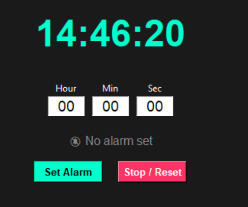
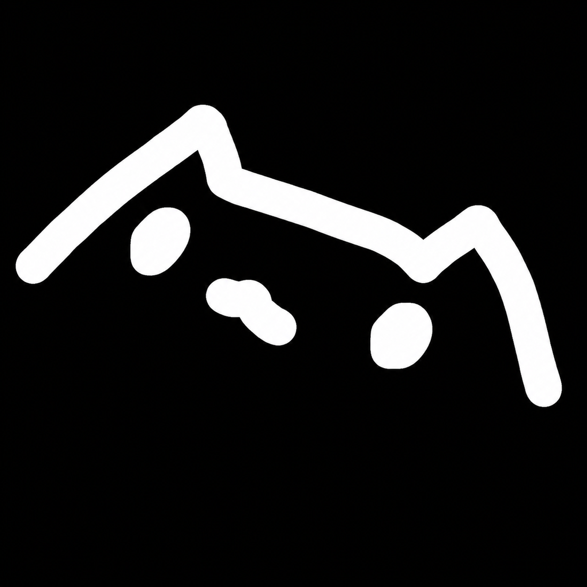
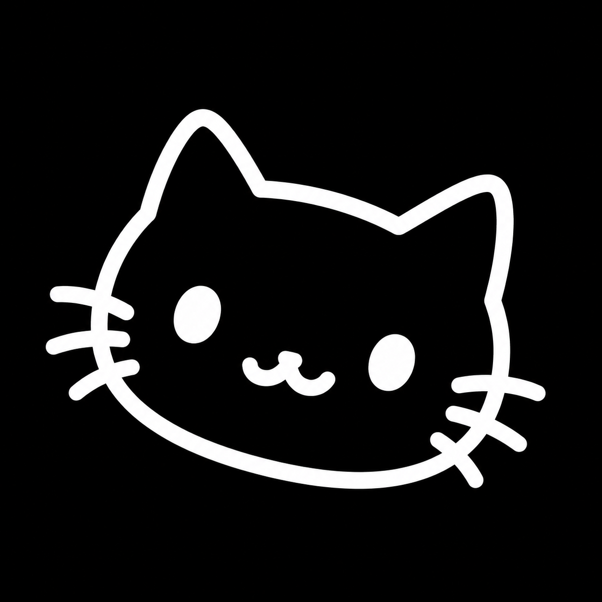
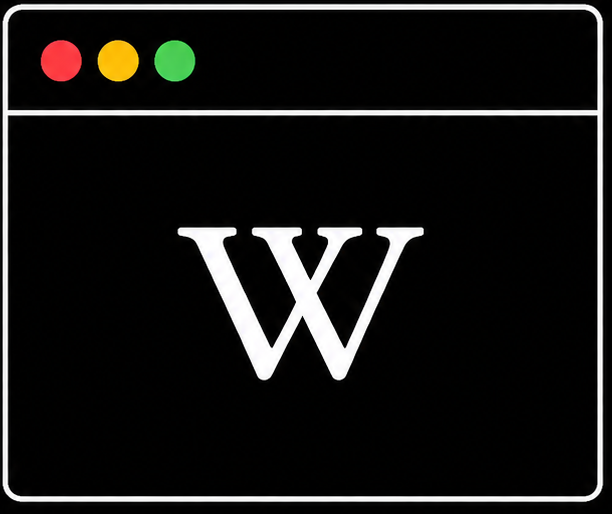

Tools and libraries I've been working with. currently Learning Python.
Python
PyTorch
TensorFlow
scikit-learn
NumPy
Pandas
Matplotlib
PyQt5
OpenCV
ChatGpt
Git
Git
claude
02 Learning Path
Roughly the order things clicked. Edit the dates, topics, and tags to match your actual timeline.
Python fundamentals
Syntax, functions, OOP, file I/O — the boring-but-necessary foundation everything else sits on.
pythonOOP
Small logic projects
Built simple simulations and CLI tools to practice control flow and randomness — this is where Russian Roulette and the Calculator came from.
randomCLItkinter
Core ML concepts
Regression, classification, train/test splits, overfitting — learned by breaking scikit-learn models on toy datasets.
scikit-learnpandas
Speech, & automation
Speech recognition and text-to-speech pipelines, intent handling — leveled up into building JARVIS.
speech_recognitionpyttsx3NLP
MedOS Shell
wrote 400 LOC Shell os with Ascii, Web browser, Camera Features.
Pythondeployment
03 Daily Progress Log
The actual day-by-day log. I haven't shipped a full end-to-end ML project yet — this is the grind that comes before that: Python fundamentals, OOP, the math, and reading the papers that keep coming up. Click a day to expand it.
DAY 01The roadmap, Python basics, and why data beats algorithms
Variables, conditional expressions, type conversion, string methods, if-elif-else, wrote a "shitty calculator," string indexing, logical operators (AND/OR/NOT), the math module, I/O, arithmetic operators, ternary operator, f-strings, augmented assignment, format specifiers, while loops (incl. infinite loops), for loops (range(), reversed(), break, continue — built a countdown timer with time.sleep()), nested loops, collections (list, set, tuple, dir(), help(), len(), ord()).
Reading
"The Unreasonable Effectiveness of Data" — it's not the best algorithm that wins, it's whoever has the most data. Also read the XGBoost paper, "A Scalable Tree Boosting System."
DAY 02Quiz game, dictionaries, and 2D lists
▶
Python
Built a quiz game. Covered sets, tuples and their methods, 2D lists, iterating with nested loops, dictionaries and their methods, iteration patterns, and the random module.
DAY 03Functions, *args/**kwargs, and teaching Saad
▶
Python
Functions (arguments vs. parameters), keyword arguments, positional arguments, default arguments, arbitrary arguments — *args (tuples) and **kwargs (dictionaries), enumerate(), iterables, membership operators (in / not in), list comprehensions.
Teaching
Took a class with Saad — taught him programming fundamentals, data types, how to use VS Code and Python Intellisense, gave him a log to track his own progress, and recommended he follow BroCode.
DAY 04Modules, scope, dunder methods — and a wall of ML theory
▶
Python
List comprehensions, match-case statements, wrote a custom module (factorial_module.py), learned flush(), built a hotel management simulator with ASCII animation, variable scope and scope resolution (LEGB), dunder methods (if __name__ == "__main__"), a banking simulator using functions, and a coffee machine program.
Reading
"A Few Useful Things to Know About Machine Learning" — data alone isn't enough; the practical steps textbooks often skip; the three components of ML; the primacy of generalization; the curse of dimensionality; and the bias-variance tradeoff.
Also Covered
Quasi-Newton methods, KL-divergence, greedy search, beam search, combinatorial optimization, gradient descent, conjugate gradient, linear & quadratic programming, hyperplanes, propositional rules, neural nets, graphical models. Implemented decision tree induction and conditional random fields. Takeaway of the day: feature engineering matters more than the textbooks let on.
DAY 05Russian Roulette (with sound), a cipher, and first steps into OOP
▶
Python
General practice, plus two real builds: the Russian Roulette program with sound, and a substitution cipher encryption program using strings.
OOP
Class creation, methods vs. functions, attributes (variables inside self) — wrote a bank account class and a library class, and learned the difference between class variables and instance variables.
DAY 06Inheritance
▶
Python — OOP
Inheritance — how a child class inherits from a parent — multiple inheritance vs. multilevel inheritance, and super().
DAY 07Polymorphism, software engineering, and the full ML taxonomy
▶
Python — OOP
super() in depth, Method Resolution Order (MRO), wrote a parent → child → grandchild class chain, polymorphism (inheritance-based and duck typing), and @abstractmethod.
DAY 11Broadcasting, a matrix calculator, and a failed logistic regression attempt
▶
NumPy
Broadcasting + practice, aggregate functions and filtering data, generating random numbers. Built a matrix calculator.
First ML Attempt
Tried implementing logistic regression from scratch (binary cross-entropy loss) — didn't land, but this is where the math started meeting the code. Followed by more general Python practice.
DAY 12Pandas in an hour, plus ResNet, Attention, and BERT
▶
Pandas
"Pandas in 1 Hour" — panel data, essentially Excel for Python, used for data visualization, data analysis, and feeding ML pipelines. Series vs. DataFrame, loc[] vs iloc[]. Also went through a DataCamp cheatsheet.
Papers
"Deep Residual Learning for Image Recognition" (introduced the ResNet architecture), "Attention Is All You Need," and "BERT: Pre-training of Deep Bidirectional Transformers for Language Understanding."
DAY 13Pandas deep dive and Matplotlib basics
▶
Pandas
DataFrames, creating new rows, importing CSV & JSON files, selection by column & row, filtering, aggregate functions, and data cleaning — the reminder that roughly 75% of real ML work is data cleaning, and most of it happens in Pandas.
Matplotlib
Plot customization and a basic X-Y plot — first steps into visualizing data instead of just printing it.
DAY 15Training a neural net in raw NumPy
▶
Neural Nets, From Scratch
Attempted to train a neural net using only NumPy — loading the MNIST dataset, one-hot encoding, wiring up the network, thinking about features, and running into overfitting vs. underfitting for the first time hands-on.
Tooling
Set up a Kaggle account as a real dataset source going forward.
DAY 16All of Matplotlib, and the ML pipeline end-to-end
▶
Matplotlib
Plot creation and customization, ticks, gridlines (grid()), bar charts, pie charts, scatter plots, histograms, subplots & figures, and the tuple object as it's used for figure sizing.
The ML Pipeline
Learned the full pipeline shape: Load Dataset → EDA → Clean Data → Convert Data to ML-ready format → Split Features → Train/Test Split → Train ML Model (scikit-learn) → Evaluate (prediction / score).
DAY 17Random Forests and AlexNet
▶
Random Forests
An ensemble ML algorithm — like asking many experts and voting on the answer, built on decision trees for classification. Real-world use cases: customer churn prediction, credit scoring, stock market prediction. How it works: bootstrap sampling → random feature selection → grow many trees → vote.
Paper
"ImageNet Classification with Deep Convolutional Neural Networks" (AlexNet) — deep CNNs trained on GPUs outperformed every prior image recognition method. Covered computer vision fundamentals, GPU-accelerated training, dropout, data augmentation, and why ReLU made training faster.
DAY 18How to learn AI in 2026, and CV in the real world
▶
Reading
"How to Learn AI in 2026" (from a Stanford AI researcher) — a reality check on how to actually structure self-study going forward.
Applied Computer Vision, Explored
Diabetic retinopathy detection, CV for physical systems, the Jetson TX series for edge deployment, sustainable water transport monitoring, multi-modal CV datasets, and using CV to assess Parkinson's disease.
DAY 19AI Agents for Beginners — tokenization to vector DBs
▶
Foundations
Tokenization (breaking text into chunks a model can process) and the transformer architecture underneath it all.
Prompt Engineering
Context windows, zero-shot vs. few-shot prompting, API message roles (system/user/assistant), and architecture schemas for structuring agent responses.
Agent Infrastructure
Mitigation guardrails, memory managers and vector databases for long-term recall, agent security, OpenClaw, and observability — tracking and performance metrics for agents in production.
DAY 20Hermes architecture, agent loops, and context engineering
▶
Hermes Architecture
Memory, context, and gateways — how the agent loop actually runs, context construction, context compression, and gateway integration.
Loop Engineering
"Cron Jobs / Loop Engineering Explained in 8 Minutes" — harnessing engineering and loop engineering as patterns for running agents continuously rather than one-shot.
DAY 21Built a 400-line CLI shell OS from scratch
▶
Python Practice
The biggest build yet — a custom CLI-based "shell OS" using subprocess, os, and plyer for desktop notifications. ~400 lines of code. Features include an echo-style command that prints text, camera access, and mini games built with the curses module, plus a handful of other built-in commands.
04 Projects
🎲
Russian Roulette
python
A command-line probability game simulating a six-chamber revolver — built to practice randomness, state, and control flow in Python. Tracks turns, odds, and outcomes across rounds.
random moduleCLI game
🤖
JARVIS
python · nlp
A voice-activated desktop assistant — listens for commands, responds with speech, and can automate tasks like opening apps, searching the web, and answering questions.
speech recognitiontext-to-speechautomation
🧮
Calculator
python · gui
A GUI calculator built with Tkinter, supporting standard arithmetic plus extended operations — the project that cemented event-driven programming and UI layout basics.
tkinterGUI
Snake Game
python
Wrote a classic, fast-paced, and lightweight desktop arcade game built with Python's native Turtle graphics, featuring real-time collision detection, dynamic difficulty scaling, and local high-score tracking.
TurtleTimeRandom
👩💻
MedOS
python
I wrote this 400 LOC of cli based Os with functionalites like Camera detection, Cmd Commands.
Python-learndata pipeline
👩💻
Pong
python
wrote a simple 2d Pong game.
Python-learncollision detection
Youtube video Downloader
python
Built a cli based youtube video downloader
Python-learncollision detection
Ludo Game using Pygame
python
wrote a full Python and Pygame-based 2-player Ludo game prototype featuring functional token deployment, automated turn-skipping logic, an on-screen HUD, and a real-time coordinate collision system for knocking enemy pieces back to base.
Python-learncollision detection

Alarm clock using Python
python
Wrote a Python-based Digital GUI Alarm Clock application utilizing the tkinter library to deliver a responsive, dark-themed desktop utility. The application features a prominent neon-style digital readout that updates every second to match the system time. By implementing a multi-threaded architecture with Python's threading module, the program continuously monitors the time in the background
Python-learncollision detection
Netflix Logo using Turtle
python
Developed a Netflix-inspired digital artwork using Python Turtle Graphics by combining geometric shapes, coordinate positioning, color fills, and drawing algorithms to recreate the iconic logo entirely through code.
PythonTurtle Graphics
♟️
Chess Game
python · tkinter
wrote a fully playable desktop Chess game using Python and Tkinter, featuring an interactive 8×8 chessboard, drag-and-click piece movement, legal move validation, turn-based gameplay, captured piece tracking, and a clean graphical user interface designed entirely from scratch.
TkinterGame LogicOOP
Black Jack using Pygame
python
Wrote a fully interactive, visual Blackjack (21) game in Python! 🃏 It features a clean, responsive tkinter GUI built to look like a classic casino green felt table. The game comes packed with real-time score tracking, dynamic Ace value adjustments (switching between 11 and 1 to prevent busting), and an automated AI routine for the dealer.
Python-learncollision detection
holographic Rocket Control
python
A Python + OpenCV augmented reality experiment where a webcam-controlled holographic rocket appears on screen. The rocket reacts to hand movements by changing size and rotation using computer vision techniques
PythonContour DetectionComputer vision
Movie finder App
python
Wrote Movie Search APP in Tkinter.The project demonstrates Python GUI development, API integration, JSON data processing, and event-driven programming
Python-learndata pipeline

PySketcher
python
A sleek, lightweight desktop application that converts any photograph into a high-fidelity pencil sketch. Built with Tkinter and powered by OpenCV for real-time edge detection and image processing, featuring high-definition exports via Pillow.
TkinterOpenCVPillow
🖥️
ShellOS
python · 400 loc
A custom CLI-based shell built with subprocess, os, and plyer — echo-style text commands, camera access, desktop notifications, and mini games rendered with curses. The biggest single build so far.
subprocesscursesplyer

Sketching Software
python
Wrote a A modern, lightweight, and responsive digital sketching desktop application built with Python's native GUI framework, Tkinter, and powered by Pillow (PIL) for high-definition exports.
Tkintercursesplyer

WikiMini
python
Wrote a lightweight, minimalist desktop encyclopedia interface that integrates directly with Wikipedia's official REST API to pull high-speed article summaries, featuring automated query formatting and a scrollable, read-only UI tailored for quick knowledge retrieval.
TkinterREST APIRequests
👾
Space Invaders
python · game
Wrote a classic Space Invaders arcade game built entirely in Python, featuring player movement, enemy waves, laser shooting, collision detection, score tracking, and smooth game mechanics that strengthened my understanding of game development and object-oriented programming.
pygameGame DevOOP
Minecraft Clone
python · ursina
Developed a 3D Minecraft-inspired sandbox game using the Ursina Engine in Python, featuring block placement and destruction, first-person movement, terrain generation, collision detection, and an interactive voxel world. This project strengthened my understanding of 3D game development, physics, and object-oriented programming.
 Pandas
Pandas PyQt5
PyQt5 Git
Git claude
claude